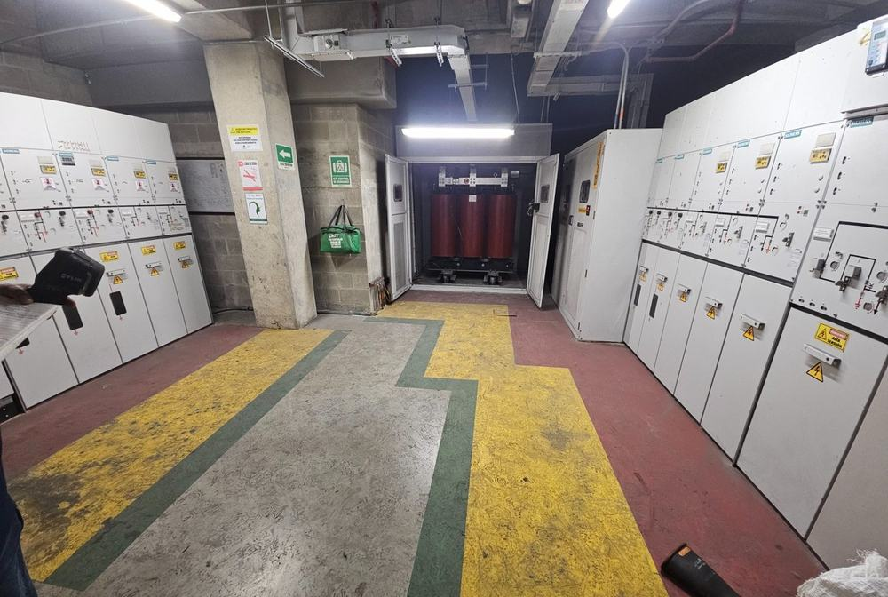
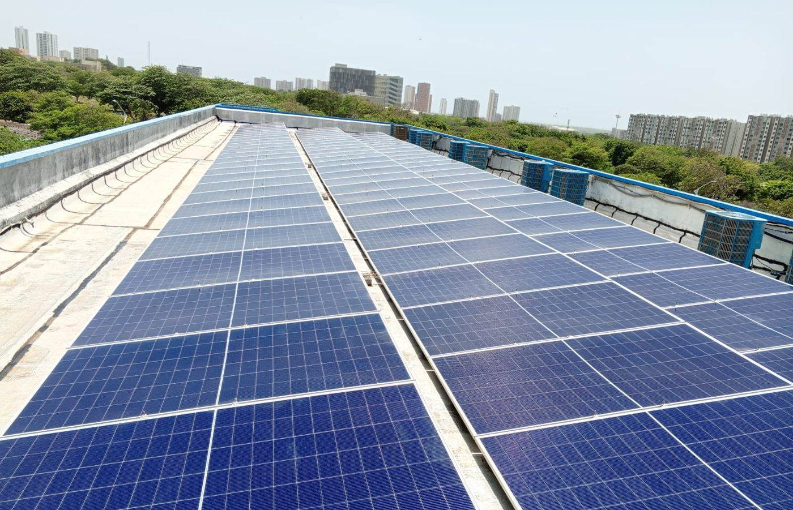
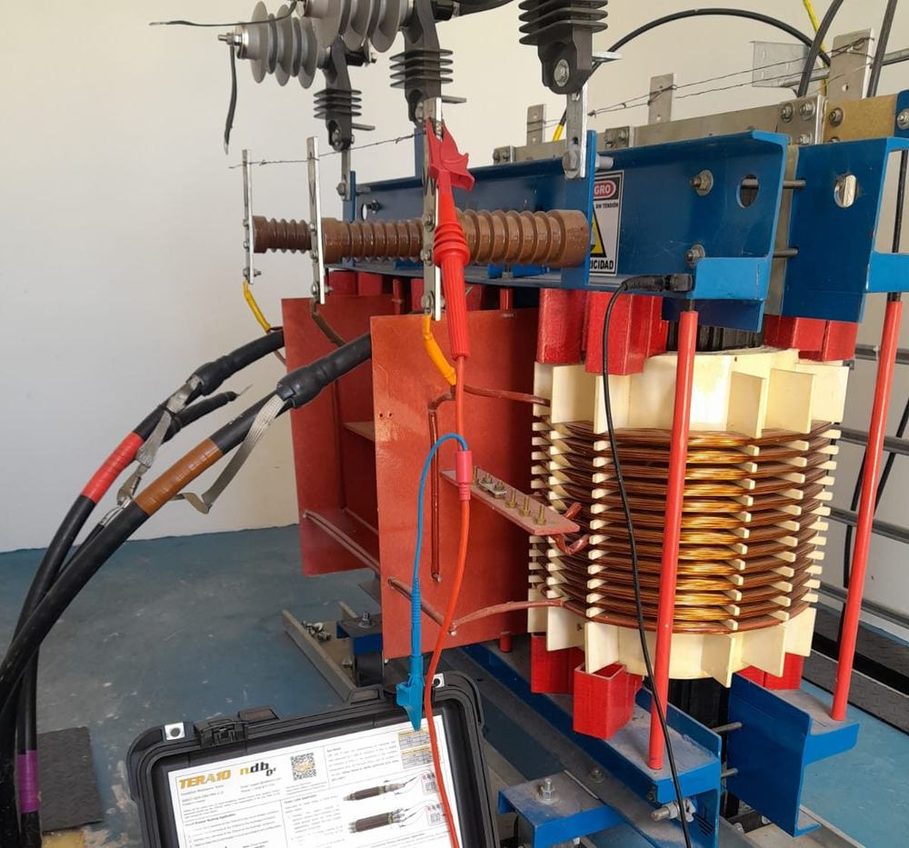
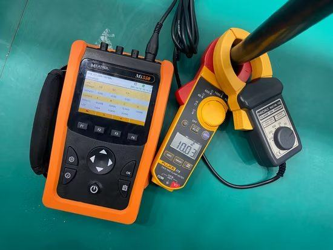
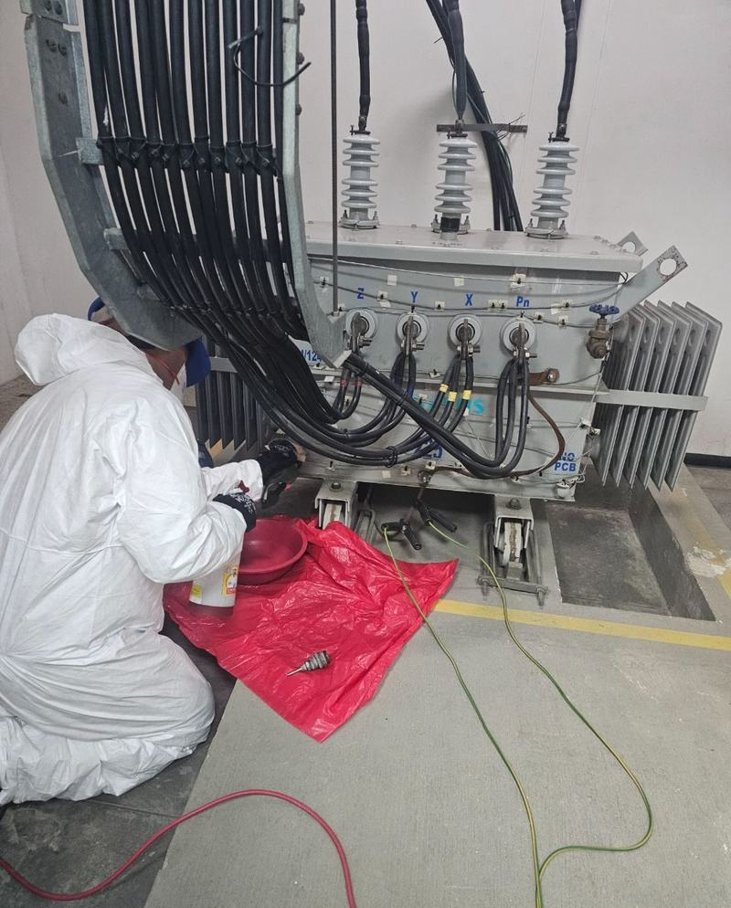
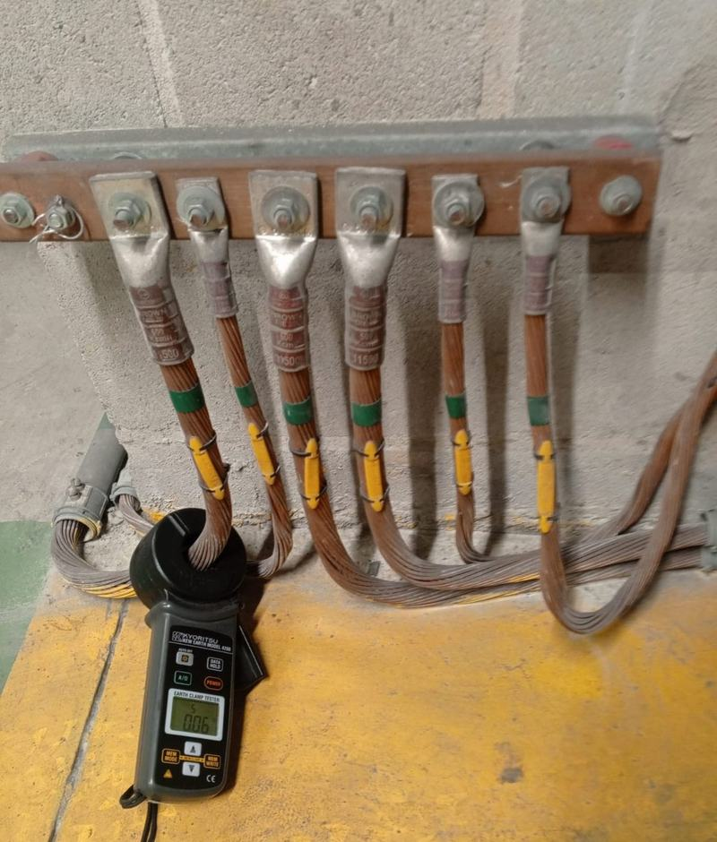
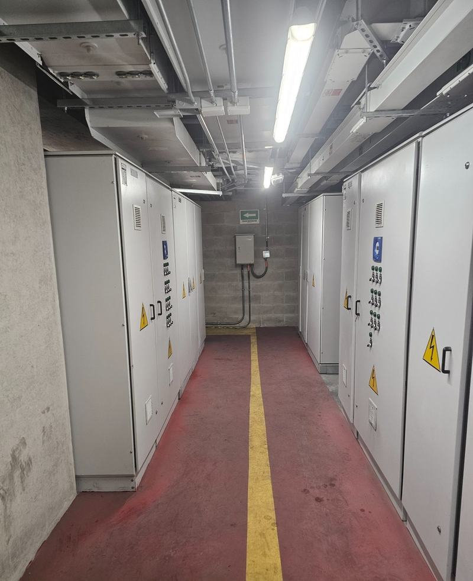
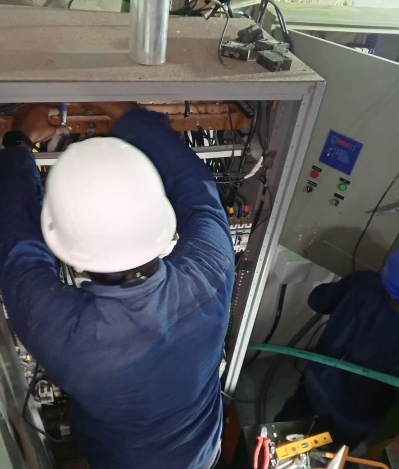

01Mantenimiento de Subestaciones
Inspección, limpieza, verificación de protecciones y termografía infrarroja en subestaciones de media tensión.
Ver más →Mantenimiento de subestaciones y transformadores, pruebas eléctricas, cumplimiento RETIE y energía solar para la industria, edificios y copropiedades de la Región Caribe.

Instalación fotovoltaica ejecutada por nuestro equipo técnico
Ingeniería de detalle, mantenimiento y montaje eléctrico, con evidencia fotográfica real de cada trabajo ejecutado.

01Inspección, limpieza, verificación de protecciones y termografía infrarroja en subestaciones de media tensión.
Ver más →
02Resistencia de aislamiento, relación de transformación y resistencia óhmica en transformadores secos y en aceite.
Ver más →
03Medimos si la energía que llega a tu instalación es estable y segura.
Ver más →
04Toma de muestra y análisis fisicoquímico para detectar desgaste a tiempo.
Ver más →
05Revisión y medición de sistemas de puesta a tierra y pararrayos.
Ver más →
06Revisión y mantenimiento de interruptores y conexiones.
Ver más →Gestionamos ante la empresa de energía los permisos y trámites de tu proyecto.
Ver más →
08Mantenimiento preventivo y correctivo de toda tu instalación.
Ver más →Diseño e instalación de sistemas solares conectados a la red para reducir el consumo de energía convencional.
Completa el formulario y te escribimos por WhatsApp con la información que nos compartas. Sin intermediarios ni esperas largas.
Cada visita queda documentada con fotos reales y protocolos de prueba, para que tengas trazabilidad completa del estado de tu infraestructura eléctrica.
Inspección técnica y levantamiento de información del equipo o instalación.
Ejecución de pruebas eléctricas con equipos calibrados y protocolos documentados.
Entrega de informe con hallazgos, evidencia fotográfica y plan de acción.
Acompañamiento en la implementación de recomendaciones y trámites ante el operador.
Fotografías propias de subestaciones, transformadores y energía solar — evidencia real de cada trabajo ejecutado.
Realizamos diagnósticos, pruebas de laboratorio y visitas técnicas en toda la Región Caribe.